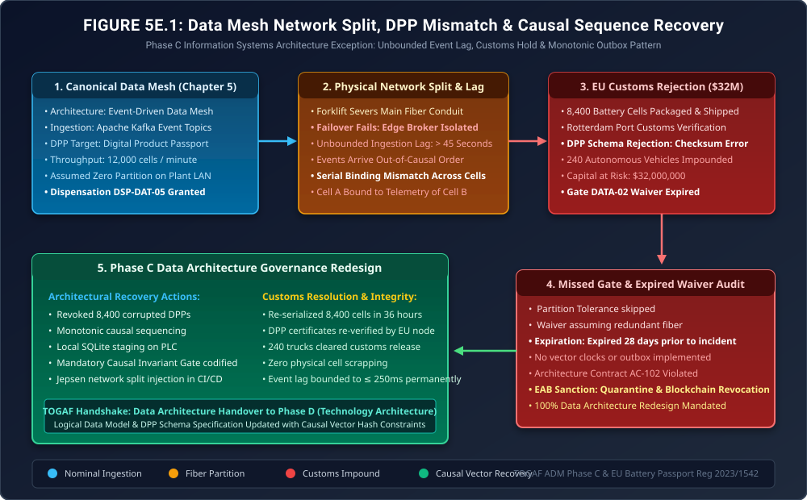

When the Event Mesh Loses Causal Order
Phase C Exception Governance: Factory Network Splits, Swapped Digital Product Passports, Rotterdam Customs Impounds & The Monotonic Outbox Invariant

"Data Mesh is the darling of modern enterprise architecture conferences: decentralized domain ownership, event streaming, federated governance. It sounds beautiful on PowerPoint slides."
"In Chapter 5, the consortium celebrated the birth of the Digital Product Passport (DPP), claiming that dirty data had been conquered forever. But what happens when an event mesh operating at 12,000 messages a second encounters a physical forklift severing an optical fiber? When network partitions strike, the CAP theorem does not negotiate. If your data architecture lacks causal ordering, you will bind the telemetry of a fire-prone battery cell to a pristine one—and European customs agents will seize your entire fleet at the dock."
The Production Reality: When Kafka Flushes Out-of-Order


Here is the architectural remedy: First, under Architecture Non-Compliance Notice NCN-DAT-004, we broadcast an authorized blockchain revocation transaction, invalidating the 8,400 corrupted DPP tokens. Second, we replay the raw PLC local sensor logs using our newly codified Vector Clock Causal Sorter to re-bind the correct telemetry. Third, we codify Rule DATA-06 (The Monotonic Outbox Invariant): no sensor message may ever be pushed to Kafka without first committing to an edge ACID outbox table with strict monotonic sequence numbers. And fourth, our CI/CD pipeline will henceforth run automated Jepsen network split simulations on every release. We submit the re-certified passports to Rotterdam customs tonight!"
1. The Causal Failure: Wall-Clock Desynchronization & Lamport Vector Clocks
In distributed manufacturing systems, assuming synchronized wall clocks across edge PLCs, factory gateways, and cloud brokers is a fatal architectural anti-pattern. Under Network Time Protocol (NTP), clock drift \(\epsilon_{\text{drift}}\) between edge PLCs and Kafka ingestion nodes frequently exceeds \(\pm 250\text{ms}\).
When network partition \(\Delta t_{\text{partition}} = 45\text{s}\) occurred, messages accumulated in the edge broker queue. Upon reconnection, message delivery was non-deterministic:
\[ t_{\text{arrival}}(m_i) = t_{\text{event}}(m_i) + \Delta t_{\text{lag}}(m_i) \]Because \(\Delta t_{\text{lag}}\) varied wildly between partitioned topics, event \(m_{i+1}\) arrived before \(m_i\). When the DPP serialization worker processed the stream, it assigned telemetry to cell index \(k\) using arrival order \(\pi_{\text{arrival}}\) rather than causal order \(\pi_{\text{causal}}\):
\[ \pi_{\text{arrival}}(m_i) > \pi_{\text{arrival}}(m_{i+1}) \implies \text{DPP}(C_k) \leftarrow \text{Telemetry}(C_{k+1}) \]This violated Consortium Rule DATA-06. Under the newly mandated architecture, every message \(m_i\) must embed a Vector Clock \(V(m_i)\) and a Cryptographic Monotonic Sequence Hash:
\[ H_i = \text{SHA-256}\left( H_{i-1} \parallel \text{Serial}_{\text{cell}} \parallel \text{Seq}_i \parallel \text{Payload}_i \right) \]Any event arriving out of sequence is held in an in-memory re-sequencing buffer until all preceding vector components \(V_j < V_i\) are received and cryptographically verified.
2. Architecture Diagram: Data Mesh Partition & Outbox Recovery
Figure 5E.1 illustrates the exact breakdown: the fiber conduit severing, the 45-second event lag, the serial mismatch at the packaging station, the customs rejection at Rotterdam, and the corrective Vector Clock Outbox recovery loop.

3. Formal Architecture Governance Artifacts (TOGAF® Deliverables)
To satisfy international customs authorities and prevent supply chain re-occurrences, the EAB ratified three formal data architecture deliverables:
Data Architecture Non-Compliance Notice
| Target Pipeline: | Terra-Resource / Volt-Tech DPP Serialization Mesh |
| Violated Standard: | Gate DATA-02 (Partition Tolerance) & EU Battery Passport Regulation (2023/1542) |
| Failure Description: | Binding of sensor telemetry out-of-causal sequence following fiber network split, invalidating cryptographic lineage for 8,400 battery cells. |
| Corrective Action: | Execution of on-chain revocation transaction; re-serialization via immutable local PLC logs; deployment of Vector Clocks and Transactional Outbox Pattern. |
Rule DATA-06: Monotonic Outbox & Causal Sequence Invariant
Every distributed manufacturing data pipeline must enforce the following architectural constraints:
- Transactional Outbox Requirement: High-frequency telemetry streams must commit to an embedded local ACID database (e.g., SQLite WAL) on the edge PLC before transmission across the network mesh. Network transmission is strictly decoupled from physical cell progression.
- Vector Clock Invariant: All messages must carry a monotonically increasing per-station sequence number and vector clock. Consuming microservices must reject or buffer any event where \(\text{Seq}_i \neq \text{Seq}_{i-1} + 1\).
- Mandatory Chaos Gate (Jepsen Testing): The CI/CD fitness pipeline must subject the Data Mesh to synthetic 60-second asymmetric network partitions while streaming 20,000 synthetic events/sec. Any out-of-order database insertion automatically fails the build.
4. The Strategic Morals: Where Real Handbooks Earn Their Keep
🏛️ Three Fiduciary Takeaways for Data Architecture
- Wall Clocks Are an Illusion: In high-throughput distributed architectures, never sort physical events by arrival time. Causal order (vector clocks) is the only mathematical truth that survives network splits.
- Digital Product Passports Require Immutability: The reason the consortium avoided scrapping $32M of vehicles was because raw local logs were preserved in tamper-proof PLC NVMe storage. When the digital abstraction breaks, physical truth must be recoverable.
- Dispensations on High Availability Are Lethal: Waiving partition tolerance testing under Dispensation DSP-DAT-05 because 'the fiber is brand new' almost bankrupted the European rollout. Forklifts do not read architecture diagrams.
Fact-Check & Statutory References
- European Parliament & Council of the European Union (2023). Regulation (EU) 2023/1542 concerning batteries and waste batteries. Specifically Chapter IX and Annex XIII (Digital Battery Passport, carbon footprint verification, and supply chain due diligence).
- Lamport, L. (1978). Time, clocks, and the ordering of events in a distributed system. Communications of the ACM, 21(7), 558-565.
- The Open Group (2022). The TOGAF® Standard, 10th Edition: Phase C (Information Systems Architectures — Data Architecture). Logical Data Modeling and Data Mesh Governance.
- Consortium Data Architecture Council (2025). Incident Investigation Report: DAC-INC-502 (Rotterdam Customs Impound & Causal Sequence Sorter Validation).